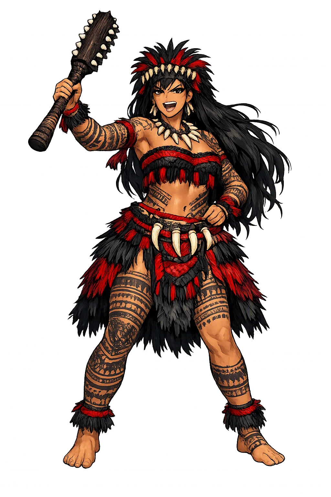
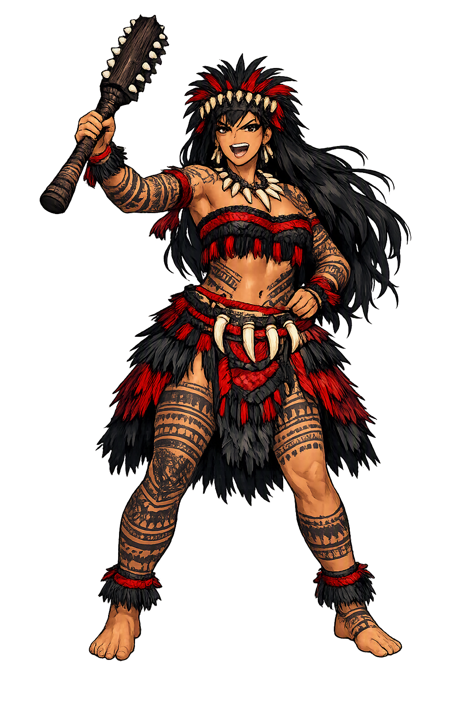

Stories of Nafanua
Nafanua's cycle, recorded from Sāmoan oral tradition in the nineteenth century, is Samoa's great story of concealed power: a goddess hidden in the earth, a people crushed by tribute, and a victory that made a woman the ruler and prophet of the islands.
Before Nafanua's story begins, the sources tell of her mother Tilafaiga and her twin Taema. Born joined at the back, the girls were cut apart at 'Aopo on Savai'i with the obsidian teeth of the Fijian king Tui Fiti. Sent to Fiji to fetch a gift for their father, the underworld king Saveasi'uleo, they returned with the tattoo instruments — and, laughing, reversed the words of the song that told which sex should bear the marks, so that in Samoa it was the women who were tattooed first. In the recorded genealogies (Turner, Samoa a Hundred Years Ago, 1884; Stair, Old Samoa, 1897) this voyage of the twins explains the origin of Sāmoan tattooing, and it frames everything that follows: Nafanua's drama of concealment and emergence belongs to a family that already moves between worlds — Samoa, Fiji, and Pulotu, the land of the dead. The myth reads Samoa's geography of kinship as a single story.
Nafanua was the child of Tilafaiga and her own father Saveasi'uleo — a union the tradition does not hide and does not excuse. Because of it, the infant was spirited away and hidden in the earth at Falealupo, at the western tip of Savai'i; her very name is her biography, glossed in the early records as 'hidden in the earth' (Stair 1897; cf. fanua, 'land, earth'). She grew beneath the ground, fed in secret, known to the village only as a rumor. The detail is theological as much as narrative: Samoa's savior is not born in a chiefly house but underground, the child of a shame that had to be buried. When the chiefs' tyranny later breaks over the district, it is precisely the person the earth was hiding who rises out of it. The myth of her concealment makes Nafanua the standing answer to disgrace — what a family buries, the land remembers.
In the generations after Nafanua's kin divided the districts, the young men of the ruling chiefs turned custom into tribute: every household at Falealupo was ordered to furnish pigs and food for the chiefs' work-parties. A woman of the village, ordered to give up her only pig and her kava, instead befriended the stranger who lived in the earth — bringing her water, sharing her griefs. Nafanua told her: refuse. When the chiefs' messengers came and the woman answered that the hidden one had forbidden it, the chiefs sent armed men to crush the defiance. Nafanua rose out of the earth with her war club — named in the accounts Televave, 'blows in different directions' — and the village rose with her. In the battle at Falealupo the oppressors were struck down, and the rule they had abused passed away from them forever (Stair; Kramer, The Samoa Islands, 1902). The story makes salvation begin with a small act of mercy: a cup of water offered to someone no one else would see.
The records agree that Nafanua was more than a war leader: she was a prophet of Samoa's political future. After the victory, the chiefs ceded the malo — the rule — to her, and tradition remembered her proclamations: that the government would one day come from the west, and that 'only a remnant would remain for that single day' (aupito mavae ma la aso e tasi), words later read as foretelling both the missionaries and the colonial powers who arrived from the west in the nineteenth century (Stair 1897; Mead, Social Organization of Manu'a, 1930, for the later life of the cycle). The exact wording varies with the teller, as is normal for an oral tradition, but the structure is constant: Nafanua's rule is legitimate because she can see beyond it. The myth declares that Samoa's salvation is historical, not eternal — each age must recognize the new thing coming over the horizon.
War
Nafanua is the Sāmoan war goddess 'hidden in the earth': daughter of the underworld king Saveasi'uleo, she rose from the ground at Falealupo to overthrow tyrannical chiefs, took the malo — the rule of the districts — for herself, and prophesied the governments that would come after her. She is war waged for the oppressed, prophecy spoken from below, and salvation arriving from the most unlikely place.
She led the people of Falealupo against chiefs whose demands of pigs and kava had become tyranny, striking them down with her war club.
She foretold that rule would come to Samoa from the west and that only a remnant would remain — words later read as foretelling the missionaries and the colonial government.
Her name is her biography: the child of a buried shame, raised beneath the soil of Falealupo, unknown until the moment she rose.
The defeated chiefs ceded the malo, the government, to her — the woman no chief had thought to fear.
From the original script to the living URL
Nafanua
The name survives in scholarly transliteration. Nafanua is the standard Polynesian romanisation, documented in academic sources — “Hidden in the earth”. Because the spelling uses only Latin letters, the form is the same in both ASCII and Unicode.
No indigenous writing system is securely attested for individual polynesian names. The form shown is a modern scholarly transliteration.
nafanua
The plain nafanua form is identical to the Unicode restoration. Because this name is already written in Latin letters, no diacritics, stress, or script information were lost — only capitalization differs.
Nafanua
The Unicode restoration does not need to recover lost marks for Nafanua. Its value is canonical spelling and consistent cataloguing, not the reconstruction of erased orthography. The domain is readable as-is to both DNS and humanity.
Nafanua.com
This restoration is written entirely in ASCII letters — no Punycode encoding stands between Nafanua and the DNS. The domain reads identically to machines and to human eyes.
Owned, ideal, and ASCII forms of Nafanua
Nafanua
The full Unicode restoration. nafanua.com is not in the PuniCodex collection — it is watched for release; if it drops, this temple upgrades to an owned flagship.
How Nafanua was spoken
How Nafanua is preserved in writing
No indigenous writing system is securely attested for individual polynesian names. The form shown is a modern scholarly transliteration.
Contribute scholarly provenance →Nafanua asks what power looks like when it has been buried. Her whole mythology is an inversion of the expected order: the child of a shameful union, hidden in the ground, armed with nothing but a club and the truth of the people's grievance — and it is she, not the chiefs with their tribute-lists and work-parties, who ends up holding the government. The earth that concealed her becomes the earth that delivers her, and the cup of water a poor woman offers a stranger becomes the first weapon of the rebellion. The lesson the tradition keeps returning to is that legitimacy flows from the bottom: from the villager who refuses an unjust demand, and from the buried person who chooses the moment to rise. Her prophecy is the other half of her meaning — salvation is real but never final, and every age must be ready to recognize the new power coming over the sea.
Enter Extended Lore